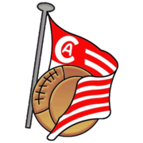
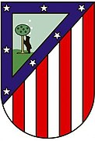
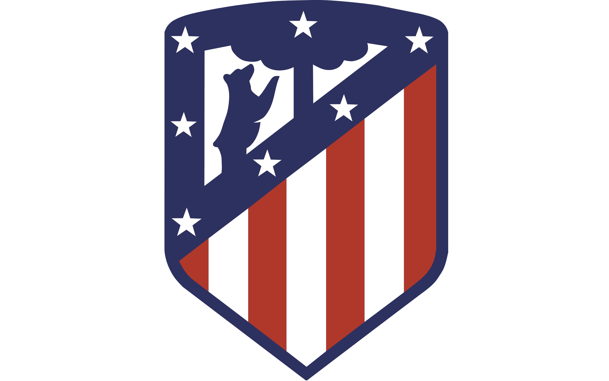

El Club Atlético de Madrid es un club de fútbol español de la ciudad de Madrid, fundado el 26 de abril de 1903, siendo por ello uno de los clubes de fútbol activos más longevos de España.
El Atlético de Madrid ha contado con cinco estadios a lo largo de su historia. Podría añadirse de facto algún estadio más, como el Campo de El Parral (1931/1932) o aquellos en los que tuvo que jugar como local debido a los destrozos padecidos en el Stadium Metropolitano durante la Guerra Civil hasta su reconstrucción: el Estadio de Chamartín (1939/1940) y el Campo de Vallecas (1940-1943). En el primer caso, el equipo rojiblanco ya había jugado anteriormente como local en el estadio madridista en la temporada 1929/1930 por distintos motivos que le impidieron jugar en el Metropolitano y por la misma razón disputó partidos como local en el feudo vallecano entre 1930 y 1934. Además, en este último estadio alzó sus dos primeros campeonatos de Liga. Puntualmente, a lo largo de su historia y por diversos avatares, también ha llegado a jugar como local en el Estadio Santiago Bernabéu (un estadio en el que, como visitante, también ha alzado varios títulos).
En la historia del Club Atlético de Madrid han existido diferentes modelos de escudos y versiones de los mismos. La forma del actual escudo se introdujo en la temporada 2017/18, y posee una forma redondeada en los bordes. Dicho escudo presenta en su parte superior el oso y el madroño del escudo de la ciudad, y en la inferior, las siete franjas rojiblancas:
El oso y el madroño. En el escudo aparecen las imágenes de un oso (realmente, una osa,455 habilitando así una doble referencia a la Osa Mayor) y un madroño, símbolos de la ciudad de Madrid. Sus orígenes datan del siglo XIII, cuando ya se nombra a Madrid como «Villa de la Osa y el Madroño»,456 debido a la gran cantidad de osos y madroños (u otro árbol semejante457) que existían alrededor de la Villa.458
Las siete estrellas. Enmarcadas en un borde azul, aparecen las siete estrellas, de cinco puntas, de la constelación de la Osa Mayor. Estas estrellas también aparecen en el escudo de la Villa de Madrid y en la bandera de la Comunidad de Madrid.459 Las cinco puntas de las estrellas representan las cinco provincias limítrofes de Madrid: Segovia, Ávila, Guadalajara, Cuenca y Toledo.460
Las siete franjas rojiblancas. Los colores del club están distribuidos en cuatro líneas verticales rojas y tres blancas.
A lo largo de la historia, han existido siete versiones del escudo del Atlético:461 El primer escudo fue tomado del Athletic Club, bajo su condición de equipo sucursal (1903-13) y tenía forma de cinturón con los colores blanco y azul, al igual que la camiseta original de ambas entidades. En el centro se pueden observar las iniciales "A" y "C" alusivas a "Athletic Club". El siguiente fue también tomado del club bilbaíno, ya con los colores rojiblancos (1913-17), y no fue hasta el tercer emblema, ya tras su independencia, en el que se reflejó además de los colores, elementos alusivos a la ciudad de Madrid. (1917-39). Se tomaron del escudo de Madrid las estrellas y la osa y el madroño por primera vez, adoptando su primera forma caudada, muy similar a la actual.
El primer, y único, cambio significativo se produjo con el cuarto escudo tras su fusión con el Club Aviación Nacional para ser denominado como Atlético Aviación (1939-47), cuyo emblema pasó a estar inscrito en el símbolo alado del club aéreo militar, conforme al acuerdo adoptado con este último tras la Guerra Civil. Entre el año 2000 y el 2005, el filial atlético de Tercera División, el Atlético de Madrid C (Atlético Amorós), tomó el nombre de Atlético Aviación,462 en honor al equipo que consiguió dos títulos de Liga en la década de los años 1940. Su escudo era muy similar al del Atlético de Madrid de 1939.
Con la quinta evolución desaparecen las alas y la corona (1947-años 1980) al desvincularse del Ejército del Aire, volviendo al escudo anterior a 1939, ligeramente modificado con cuatro líneas rojas y cuatro blancas. El sexto emblema (años 1980-2017) pasó a un diseño idéntico al del año 1947, añadiendo un ribete dorado alrededor. El último y novedoso rediseño (vigente desde 2017) el ribete amarillo se vuelve azul, al igual que la osa y el madroño, símbolos de la ciudad de Madrid, que además intercambian su orientación. La parte superior del escudo se redondea.


